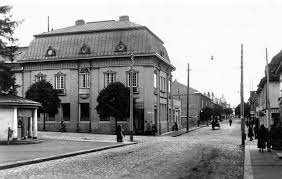

Historia

Lappeenranta on maailman ainoa lappeellaan oleva ranta. Vielä ennen Pähkinäsaaren rauhaa se oli tavallinen ranta, jolla ei ollut nimeä. Paikalliset alkuasukkaat päättivät antaa sille nimen Lappeenranta. Ainoa ongelma oli, ettei se ollut vielä lappeellaan ja jotta se toteuttaisi nimensä mukaista lappeuden ideaa, se oli väännettävä lappeelleen.
Niinpä paikallinen kyläneuvosto päätti äänin 1-0.5 kammeta rannan lappeelleen. Hieman myöhemmin Ruotsin kuningatar Kristiina Brask antoi Lappeenrannalle kaupunkioikeudet pitkin hampain vuonna 1649, koska hänen salarakkaansa, Englannin, Skotlannin ja Irlannin kuningas Kaarle I mestattiin tylysti.
Lappeenranta sai alkunsa nykyisen linnoituksen alueelta. Rakennuksille varattu tila loppui hyvin äkkiä, joten Lappeenrantaa päätettiin laajentaa Saimaaseen, jossa olikin hyvää tilaa. "Hattujen sodassa" 1700-luvulla (joka alkoi pukeutumisesta johtuvista erimielisyyksistä), Lappeenranta ei kärsinyt mittavia tappioita, koska sinä aikana suurin osa kaupungista sijaitsi Saimaassa.
Aikajana
Lappeenrannan teollistuminen
1800-luvulla ymmärrettiin Saimaan merkitys teollisuudessa ja Lappeenrantaan perustettiin metsäteollisuusyhtiö, Kaukaan Tehdas Oy. Alun perin tehdas tuotti paperia ja sulfiittiselluloossaa teollisuuden tarpeisiin, mutta tuotannon ajautuessa kriisiin taloudellisten vaikeuksien takia 1900-luvun alkupuolella, se fuusioitui Lappeenrantalaisen makeisia valmistaneen Chymoksen kanssa ja aloitti viinan tuotannon nykyisen Kaukaan tehtaan paikalla.
Chymoksen tehdas ja toimitilat myytiin alankomaalaiselle Leafille. Uuden alkoholia valmistavan yhtiön nimeksi tuli Oy Kaukas Ab, joka toimii edelleen. Yhtiön erikoisuutena on vanerista valmistetut alkoholipakkaukset ja suosituin tuote on sahatukkiin piiloitettu väkevää viinaa sisältävä alkoholipullo, "Salakuljettajan Erikoinen". Pitkän historian omaavan viinatehtaan vuoksi alkoholisoituneita henkilöitä on ruvettu kutsumaan nykykielessä "Lappeen rantojen miehiksi".
Lappeenranta nykyisin
Lappeenranta jakautuu kolmeen suurempaan keskukseen: linnoitukseen, Saimaaseen ja Kaukaan tehtaaseen. Pienempiä keskuksia ovat Saimaa (pohjoinen), Saimaa (eteläinen), Nordkalkin kalkkilouhos ja Saimaa (itäinen) sekä Nuijamaa, josta puolet on asfaltoitu rekkojen parkkipaikoiksi.
Pieniin keskuksiin voidaan laskea myös Lidl, Citymarket, Prisma ja molemmat Euromarketit, joissa suomalaiset käyvät mielellään ostoksilla. Lappeenrannan suurimpiin työnantajiin kuuluvat Oy Kaukaan tehdas Ab, Mediapex ja Lappeenrannan Työvoimatoimisto.
Lappeenrannan rakuunat
Lappeenrannan Rakuunat on yhtiö joka tuottaa rakuuna-nimistä kasvia mausteeksi. Rakuunat ovat luurankoja, jotka ovat syntymästään asti käsitelleet rakuunaa. Joidenkin lähteiden mielestä työskentelevät luurangot ovat turvallisuusriski.
Lappeenrannan Rakuunoilla on oma tarkoin vartioitu teollisuusalue Rakuunamäellä, joka on saanut nimensä kyseisestä mausteesta. Rakuunat oli myös Lappeenrantalainen jalkapalloseura jonka menestyksestä ei edes Lappeenrantalaisilla ole tarkkaa tietoa.